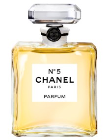
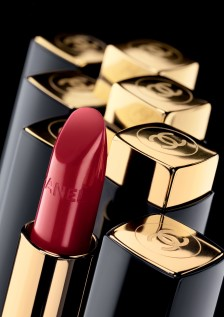
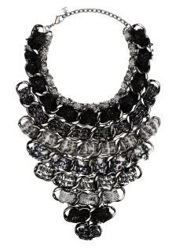

샤넬의 대표상품
  
샤넬N°5(Chanel N°5, 샤넬 넘버 파이브)는 1921년에 조향사인 에르네스트 보(Ernest Beaux)가 만든 샤넬의 첫 번째 향수이다. 이 제품은 장미 향과 라일락 향 등 단일 향수가 지배적이었던 시대에 재스민 향기를 기본으로 80여 가지의 성분들을 배합시켜 제조되었다.
레드 립스틱은 1924년에 샤넬이 처음으로 자신만의 개성과 여성의 아름다움을 표현하기 위해 만든 제품이다. 가브리엘 샤넬은 립스틱을 바르지 않고는 대중에게 모습을 드러내지 않았는데, 이 립스틱을 바르고 색상을 오래도록 유지하기 위해 그 위에 파우더를 덧발랐다고 한다. 가브리엘 샤넬은 그 중에서도 주홍빛을 띤 레드를 특히 좋아했는데, 자신의 기호에 맞춘 레드 색상을 발표하고 이를 ‘샤넬 레드(Chanel Red)’라고 불렀다.
가브리엘 샤넬은 어린 시절에 보았던 교회의 장식에서 심플한 그녀의 패션을 보완해 줄 수 있는 ‘코스튬 주얼리’의 화려함을 발견했다. 제1차 세계대전 이후, 경제상황이 여의치 못한 점을 감안한 샤넬은 코스튬 주얼리 라인을 출시하게 되었다.
다양한 종류의 컬러들이 넘쳐나던 1920년대, 샤넬은 상복을 상징하는 컬러였던 블랙을 활용하여 ‘리틀 블랙 드레스’를 제작했다. 1926년에 처음 출시된 이 제품은 남성들의 속옷으로 쓰였던 저지 소재를 활용하여 여성들이 자유롭게 활동할 수 있도록 전체 라인을 디자인했고 크레이프(Crepe), 레이스(Lace) 등을 이용하여 변화를 주었다. 이 제품의 성공으로 블랙과 화이트의 조합은 샤넬의 대표 색상이 되었고, 일반 의복에서 자주 활용하는 대표적인 색상으로 자리잡게 되었다.